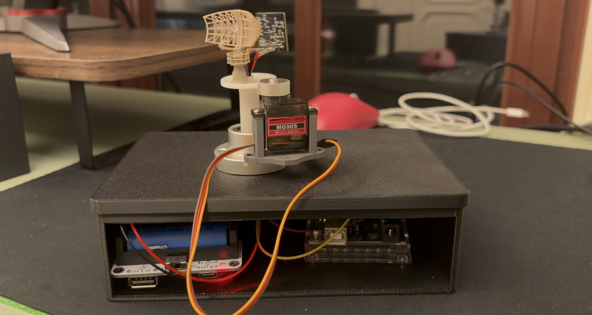

A project notebook by Leyi Wang
Making ideas
tangible.
Physics you can experiment with. Data you can explore. Software you can run. A growing collection of things I build to understand how they work.

A few places to begin
Small experiments.
Room for discovery.
Start with a question, change a parameter, and see what follows. These projects are made to be explored, not just looked at.


The person behind the projects
Curious about the theory.
Happiest building the experiment.
I’m Leyi, an undergraduate at UC Irvine interested in mathematics, computer engineering, and embedded systems. I use small, working projects to connect the ideas I study with something I can test.
This notebook brings together browser simulations, statistical tools, data pipelines, and hardware work. Some are self-contained demos; others document a larger system that runs locally. Each project makes that distinction clear.
A more personal
AI workspace.
I’m also working on a local-first assistant: a place to try local models and optional cloud APIs, with a longer-term focus on everyday usefulness and explicit control over personal data.
Follow the developmentGood questions are welcome.
Want to talk about a project, compare an idea, or share a suggestion?